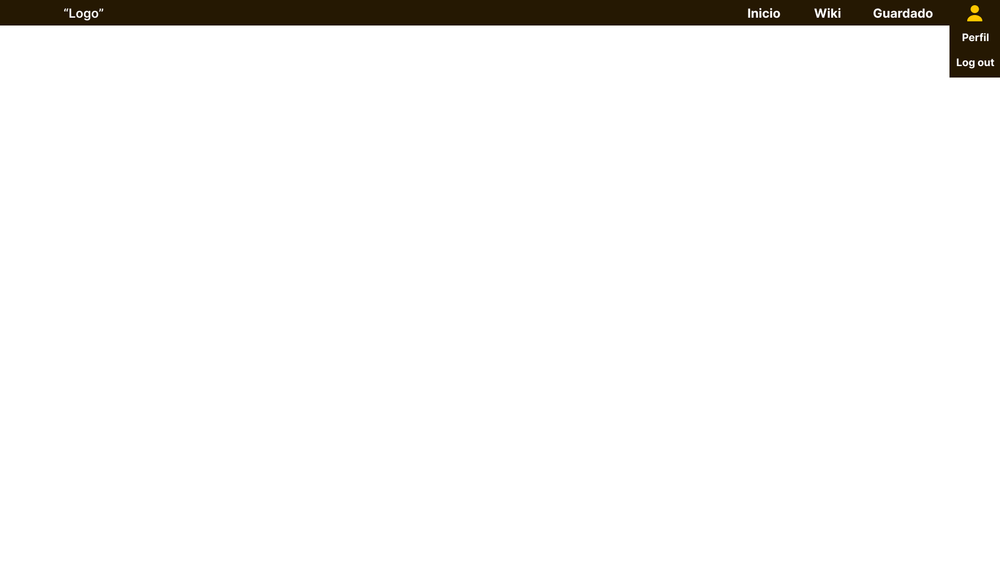
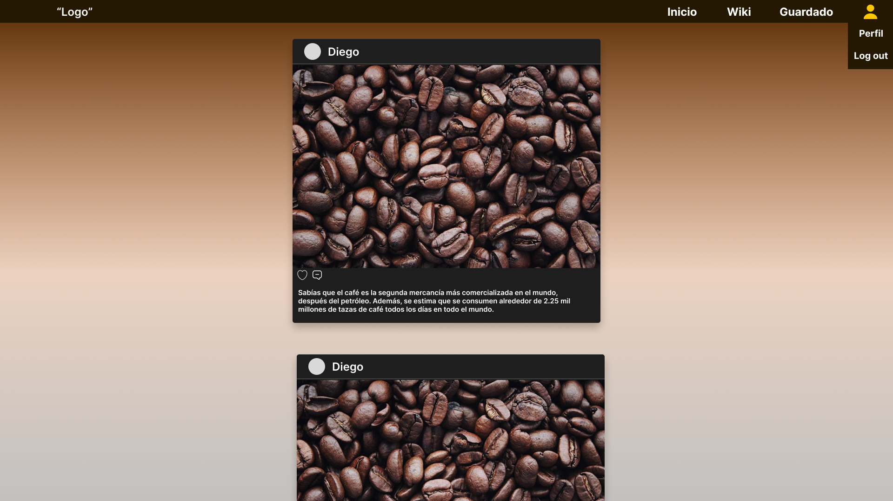
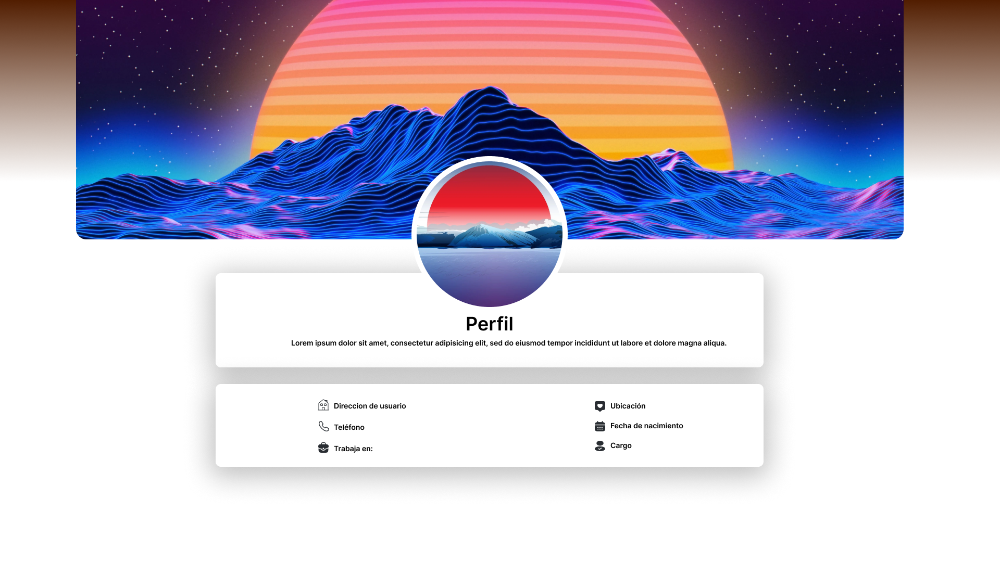
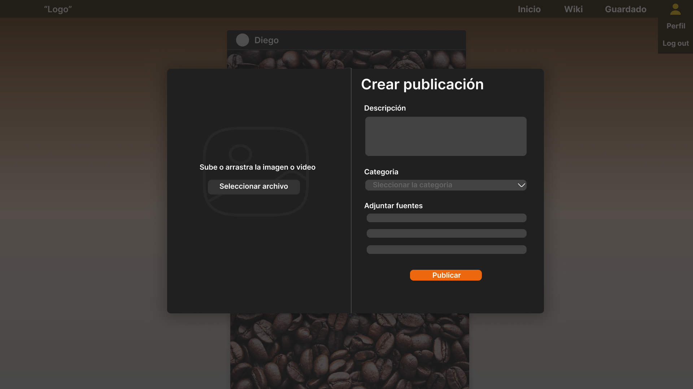

Servicio Nacional De Aprendizaje SENA
Centro De Gestión y Desarrollo Sostenible Sur colombiano
Ficha - 2692929
ADSO
El presente informe tiene como objetivo mostrar 4 mockups que formarán parte del aplicativo web llamado LinkCafé, el cual está enfocado en proporcionar información técnica y empírica sobre el café, además de promover buenas prácticas relacionadas con la producción, consumo y cultura del café. Este aplicativo contará con una sección de opinión, similar a un foro, donde los usuarios podrán compartir sus experiencias y conocimientos en torno a esta bebida. En resumen, LinkCafé busca convertirse en una pequeña wikipedia del café, que permita a los amantes de esta bebida acceder a información de calidad y fomentar una comunidad de intercambio y aprendizaje.
Objetivo del caso de prueba: Barra de navegación funcional para que el usuario se pueda mover entre los distintos apartados
Indentificador: Barra de navegación
Nombre del requerimiento o historia de usuario asociada: Como usuario, quiero tener acceso a todas las secciones del sitio web desde una barra de navegación clara y fácil de usar.
Precondiciones: Está siempre visible para todos los usuarios
Lista de pasos: Observar la barra de navegación y verificar que todos los elementos son legibles y están organizados de manera lógica y hacer clic en cada elemento de la barra de navegación y verificar que se redirige correctamente a la sección correspondiente del sitio web.
Objetivo del caso de prueba: Página principal en donde el usuario puede ver publiciones recientes y pueda reaccionar a ellas.
Indentificador: Página principal
Nombre del requerimiento o historia de usuario asociada: Como usuario, quiero que al iniciar sesión en el aplicativo me aparezca publiciones recientes por otros usuarios y puede reaccionar a ellas
Precondiciones: Está siempre visible para todos los usuarios
Lista de pasos: Observar la página principal y verificar que la información clave se muestra de manera clara y concisa y hacer clic en cada enlace en la página principal y verificar que se redirige correctamente a la sección correspondiente del sitio web.
Objetivo del caso de prueba: Verificar que un usuario pueda crear y actualizar su perfil de manera correcta.
Indentificador: Perfil de usuario
Nombre del requerimiento o historia de usuario asociada: Creación y actualización de perfiles de usuario.
Precondiciones: El usuario puede ver su perfil correctamente y puede editarlo a su gusto
Lista de pasos: Entrar al perfil del usuario, presionar en "editar" y cambiar la información que le parezca conveniente al usuario
Objetivo del caso de prueba: Verificar que un usuario pueda subir una publicación en el apartado correspondiente de manera correcta.
Indentificador: Subir una publicación
Nombre del requerimiento o historia de usuario asociada: Subida de publicaciones tal como imagenes, videos o articulos con el fin de compartir opiniones
Precondiciones: El usuario pueda subir publiciones y que se vean reflejadas en su perfil o el de otros usuarios
Lista de pasos: El usuario hace clic en el botón "Subir publicación" en el menú principal, llena el formulario y le da en subir publicación.
